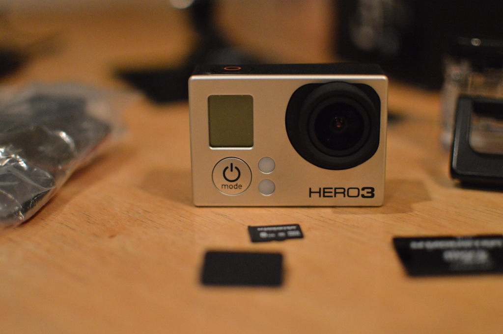

Each page includes the wwwsiteheader.php and wwwsitefooter.php so I only had to do the menu once, pretty slick, eh? I also highlighted the active link in a different color using PHP.
Today is Friday, November 16th, 2018
Here is Kirk's random picture grabber. Try it on one or more of your pages, but note that you'll need to reference the folder correctly.
More hints:
- Show that you know your stuff by changing the looks of this site with the external style sheet
- Make the site "your" site (replace the "this.php" with your first menu item, and so-on)
- Use your photos, not someone elses
- Use your own color scheme
- Check your site against Kirk's Pet Peeves
- Have a peer check your site on their computer, act on their feedback
- If you were an employer looking to hire someone, would they hire you because of your site
- Make sure you fix the broken link on this sample site